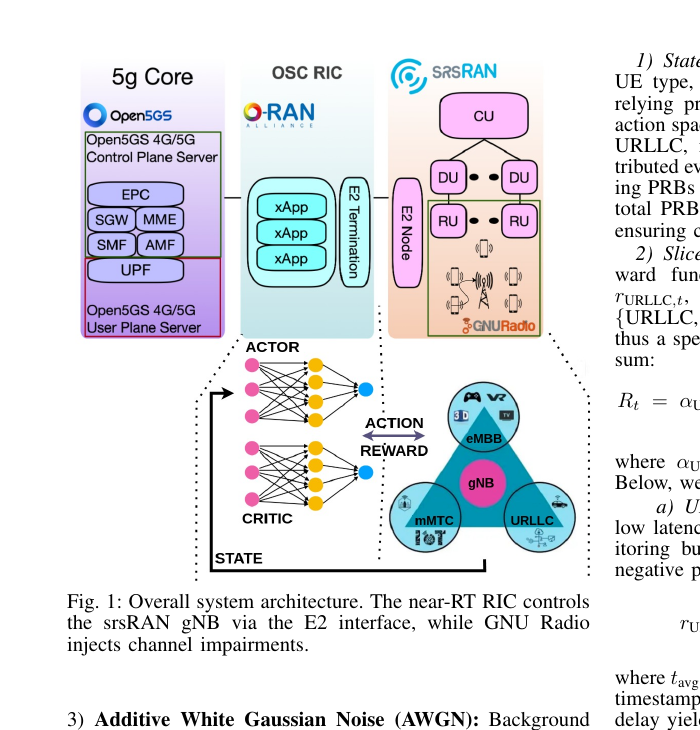
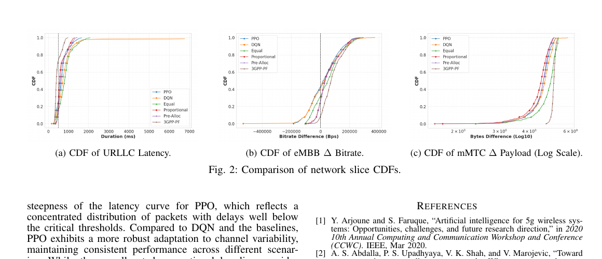

01 / DEPLOY
Bring the network online
Open5GS, the OSC RIC, OAI components, and the UE set are initialized and attached. This establishes the live network path required for repeatable experiments.
REAL connects OSC RIC, srsRAN, GNU Radio, and an RL xApp into an end-to-end demonstration of online network-slice optimization. The xApp receives live KPIs, changes PRB allocation, and learns from the next network response.
Choose a slice mix, traffic demand, and channel impairment, then observe how PPO reallocates PRBs while the system reports latency, throughput, and mMTC payload coverage.
These recordings show how the system moves from a configured 5G environment to live telemetry and adaptive resource control. Together, they demonstrate an operational path from network setup to measurable optimization.
Open5GS, the OSC RIC, OAI components, and the UE set are initialized and attached. This establishes the live network path required for repeatable experiments.
The E2 connection feeds live RAN telemetry into the monitoring layer, giving the control application visibility into active UEs, throughput, MCS, uplink, and downlink behavior.
The running system applies PRB allocation decisions across the active UE population while the dashboard records the resulting traffic and radio metrics.
The extended run makes the operating envelope visible: throughput changes, MCS variation, uplink/downlink activity, and service behavior across 12 active UEs.
The testbed manages eMBB, URLLC, and mMTC traffic for up to 12 UEs through an OSC RIC and srsRAN stack.
The xApp collects downlink throughput and slice QoS KPIs during execution, updates its policy, and adapts to changing traffic and channel conditions.
GNU Radio adds path loss, multipath, AWGN, and Doppler. The paper also makes the limits explicit: ZeroMQ saturation and the absence of a full NR PHY digital twin constrain scale.


Figures are cropped from the submitted paper to show the testbed architecture and reported slice metrics.
Back to demos ↗